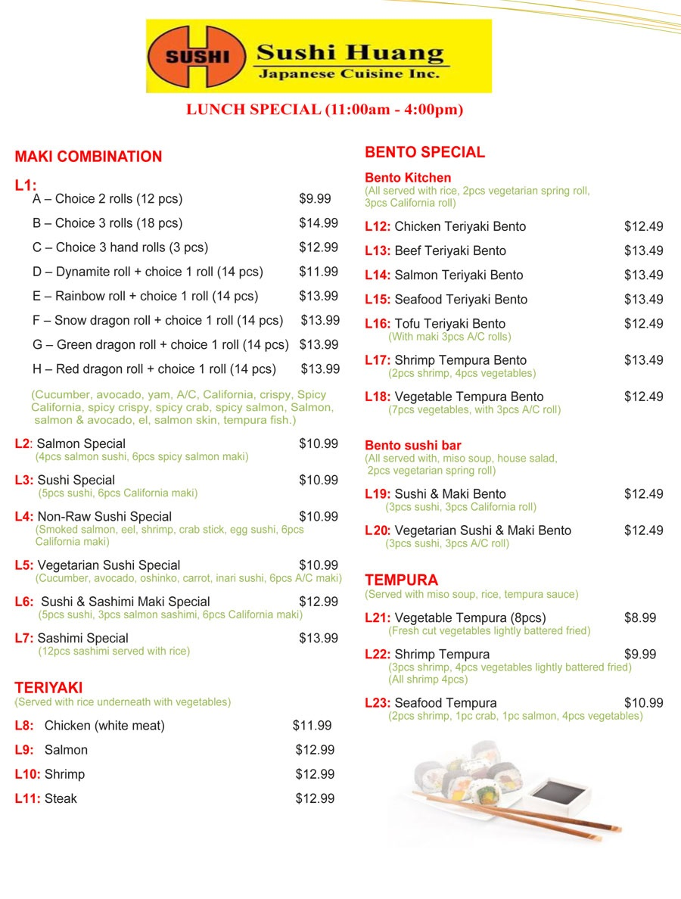

Categories
- Lunch Special Menu
- Vegetarian Menu
- Soup/Salads Menu
- Appetizer Menu
- Curry/Teriyaki/Tempura Menu
- Fried Noodles/Fried Rice menu
- Noodles Soup/Donburi Menu
- Famous Cut Rolls/Hand Rolls Menu
- Chef's Special Maki Menu
- Sushi Sashimi & Maki Combination Menu
- Party Trays/Sashimi Set Menu
- Bento Dinner Special Menu
- Dinner Set Course (Two/Four) Menu

Please scan QR code to order online
Lunch Special Menu
Time Left:
Hours
Minutes
Seconds
|  |